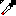
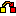

でゆ描き - 説明書
概要
でゆ描き(#deyukaki)はJUN汁ｗがベッドで寝っ転がりながら絵を描いたり、作業に飽きて落書きをするときに使うカスのペイントツールです。
ツールの使い方
どのツールも、カーソルアイコンの左上が判定箇所。バケツとかスポイトも左上の黒い三角形が判定の位置なので慣れてくれ！！！！
-
ペンツール：太さはスライダーとかで調整。アンチエイリアスはない。というか無効化した。
-
バケツツール：アンチエイリアスがない前提なので完全一致の範囲だけ塗る。レイヤー1を塗るときは、レイヤー0が透明なときだけ塗る。
-
スポイトツール：スマホで操作してるときは、長押しすると使いやすい。指を離した点の色をとるので、ガイド見よう。ちなみにマウスなら右クリックするとこれになる。
-
色置換ツール：キャンバス上の色を別の色に置き換える。なんか配色ミスったなとなったらどうぞ。
レイヤー機能
レイヤー機能が一応あり、色選択するとそのレイヤーになる。
- レイヤー0：上。一番左の色は消しゴムとして透明色になってる。
- レイヤー1：下。一番左の色を背景色とするとよいかも。
保存、コピー、その他
- 保存、コピー、まき戻しとか：みたまんま
- 左色で埋める：レイヤー0とレイヤー1を一番左の色で塗る…つまり初期化ボタンです。背景色変えたときはこれ使うといいかも。
ショートカットキー
- Ctrl + Z：まき戻し（Undo）
- Ctrl + Y：やり直し（Redo）
- E：消しゴム色を選択。もう一回押すと元の色に戻る。
- 数字キー：色を切り替え。消しゴムを1として、そこから右に2,3。レイヤーをまたいで4,5,6が割り振られる。たぶん。
スマホ操作
- 2本指移動：画面スクロールと、画面拡大
- 2本指タップ：まき戻し（Undo）
- 3本指タップ：やり直し（Redo）
状態の保存
ブラウザのIndexedDB > DeyukakiDB に色々保存します。ハードリセットとかでもデータ残るかも。直接DBの中身を見て消し去ってくれ。え？スマホだったらどすればいいかって？知らん！
- 保存される物：絵、選択色
- タイミング：最後に絵が変化してから5秒後に自動保存。また、コピーボタン、保存ボタン
お問い合わせ
不具合やご意見がありましたら、githubのアレで投げるのがたぶん一番いいです。Twitterとかでリプもらってもどっかいくので。
あとソースコード見るとなんか実装予定の機能とか既知のバグのメモがあったりする。そんなもんを見えるところに記載するなってね！
左下にあるボタン
このサイトはどのページも左下にツイートボタンがあるんですが、でゆ描きではここの仕様をいじって、ハッシュタグ #deyukaki だけを入力するようにしてます。何か描いたらここから投稿してねー☆
#deyukaki の検索結果を見る